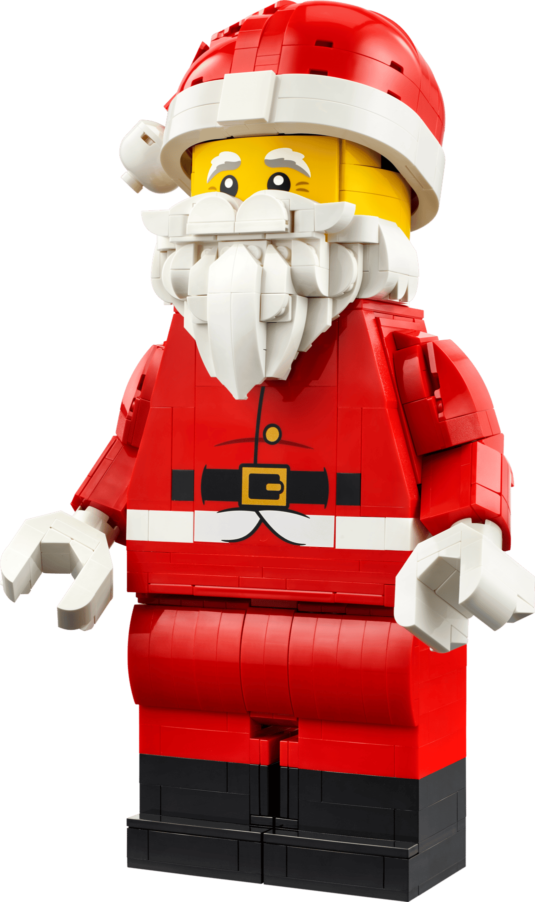
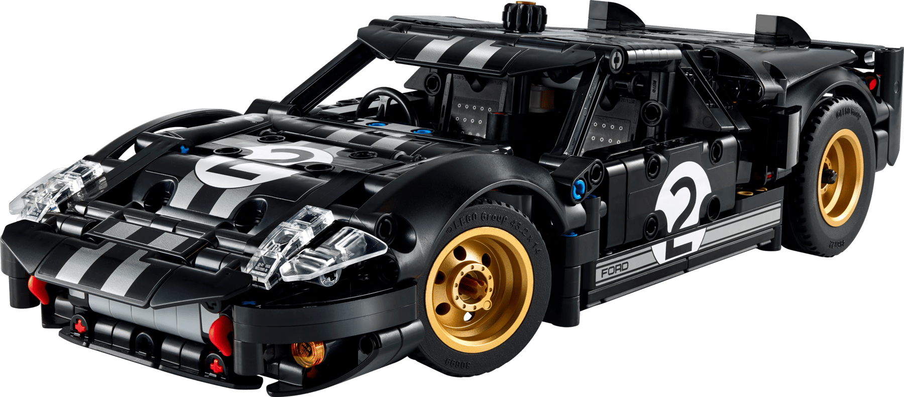

Elke set zelf gebouwd
Welke LEGO set maakt jou blij?
Zoek op naam, thema of setnummer.
67 sets gebouwd25.616 stukjes€2.464+ aan LEGO
Alle sets

Grote minifiguur van de Kerstman

1966 Ford GT40 MKII racewagen

Steen der Wijzen - Verzameleditie

Ferrari 488 Pista auto

Ford Model T

2022 Ford GT

Oracle Red Bull Racing RB20 F1 auto

Oracle Red Bull Racing RB20 F1 racewagen

Tijdmachine uit Back to the Future

Bliksem McQueen

Ferrari 499P

Game Boy

F1 raceauto's (verrassingsdoos)

Het Monsterlijke Monsterboek

Betoverde vliegende Ford Anglia

Klassieke animatiescènes

Simba de Leeuwenkoning als welp

Boomhuis

Paashaas met wortel

Orchidee

Bonsaiboompje

Bloeiende cactus

Japanse abrikoos

Miniorchidee

Klein zomers boeket

Bloemstuk met gedroogde bloemen

Miniplantjes

Sunshine Ranch

Heartlake satellietwagen

Stephanie's strandhuis

Heartlake school

Olivia's huis

Dolfijn cruiser

Jungle reddingsbasis

Popster Podium

Assepoesters romantische kasteel

Heartlake Kapsalon

Bakkerij

Sunshine Oogst

Emma's Toeristenkiosk

Emma's paardentrailer

Emma's huis

Junglewaterval reddingsactie

Heartlake Privéjet

Zomercaravan

Emma's Karate Class

Olivia's veulentje

Andrea's slaapkamer

Stephanie's lammetje

Olivia's strandbuggy

Leeuwenwelp savanne

Het paradijsje van Schildpad

De tempel van Tijger

Andrea's berghut

Panda bamboebos

Popster Opnamestudio

De Grot

Shell Tankstation

Shell Tankwagen

Ferrari 512 S

Ferrari F12 Berlinetta

Ferrari F40

Ferrari F138

Ferrari 250 GT Berlinetta

Ferrari 458 Italia

Finish Line & Podium

Ferrari 250 GTO
Geen sets gevonden. Probeer een ander woord.